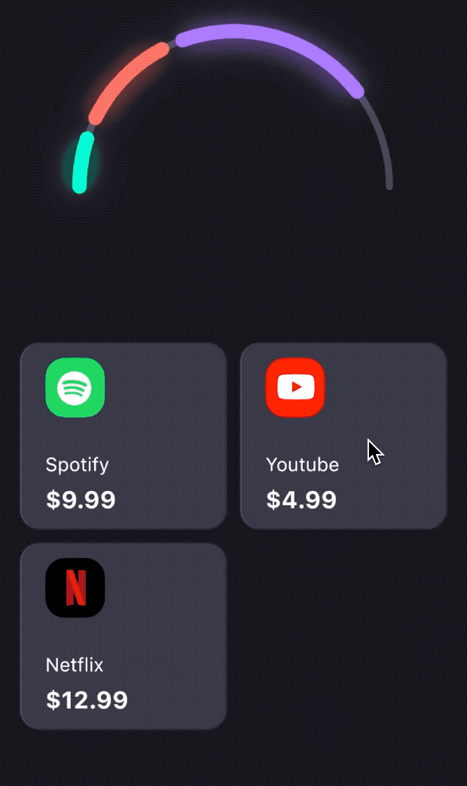

Flutter 开发笔记

记录下 Flutter 开发过程中遇到的问题。
UI
Widgets
AppBar
当自定义导航栏中的标题栏之后，配合 route 使用有时候会发现导航栏左边会有空白出现，后来才发现，原来是系统默认给添加了返回按钮，解决该问题的方法也很简单，只要在 AppBar 中将 automaticallyImplyLeading 属性设为 false 就可以了，下面是文档中的注释：
1 | |
该属性表示是否应该在未提供 leading 属性时自动检测应该使用何种 leading 组件。设为 false 之后，如果 leading 为空，则 leading 位置会默认让位给标题，也就不会产生上面的空白占位现象了。
动态高度
当自定义 AppBar 的时候（未使用 CustomScrollView 组件），有时候我们可能需要动态指定导航栏的高度，比如在列表滑动过程中动态添加 bottom 组件。
1 | |
这样虽然能够实现，但是有个问题，那就是当状态栏高度变高之后，会把列表往下推，造成列表突然被往下挤出一部分的效果，显得不太流畅。解决办法也很简单，那就是在列表顶部保留一部分空间，用作替代状态栏变高的部分。比如，假如你列表顶部有一个高度和新增的 bottom 组件高度差不多组件，那你可以在 bottom 组件显示之后，隐藏掉它。
1 | |
Container
Container 是最常用的组件之一，这里列一些 Container 的使用技巧吧。
设置宽高后不起作用
多半是因为父组件的 constraint 是不受限的，因此，我们可以在 Container 外面包一层 UnconstrainedBox。
添加左侧边框发光的效果
通常我们只能添加上下左右边框，假如想要添加渐变的边框则可以通过 boxShadow：
1 | |
添加渐变阴影效果
比如相册应用查看大图，点击后显示菜单栏时，会使用到这种图片顶部和底部出现渐变阴影的效果，我们可以使用 foregroundDecoration + gradient 来实现^1：
1 | |
Dialog
禁用返回键关闭 Dialog
在 Dialog builder 中使用 WillPopScope 禁用返回键返回：
1 | |
注意：使用此方法同时也会禁用 iOS 上的手势滑动返回功能，推荐判断平台后再使用。
更新 Dialog UI
修改对话框中的复选框状态，最简便的方法是通过 Element 中的 markNeedsBuild 方法：
1 | |
当然，更推荐的做法是通过 StatefulBuilder，然后就可以在 Dialog 中调用 setState 方法了，不过在调用 setState 时需要判断 Dialog 是否已经关闭，否则会造成 setState() called after dispose() 的错误，可以通过添加一个标志位来解决，如下：
1 | |
GestureDetector
有时候点击事件会无法触发，通常是在添加了一些容器组件，比如 Container 和 Padding 之后，如果使用 AbsorbPointer 包裹目标组件则又可以接收到点击事件：
1 | |
原因是 GestureDetector 在默认的 behavior 下会忽略不可见的元素，所以，最根本的解决办法是修改它：
1 | |
GridView
默认 Padding
GridView 默认会通过 MediaQuery 获取当前的状态栏高度作为 padding，因此我们会观察到 GridView 底部有一段空白 padding，所以，为了去除可以设置 padding 为 EdgeInsets.zero。
Hero
重复的 tag 造成失效
当一个页面有多组 Hero 动画对象时，为了避免 tag 重复导致动画失效，最好使用变量统一管理。
1 | |
文字黄色下划线
在字体上添加 hero 动画会观察到动画过程中字体有两条黄色的下划线，解决办法是在 MaterialApp 上添加 TransitionBuilder 为 DefaultTextStyle：
1 | |
或者，也可以在 child 组件外包裹一层 Material 组件：
1 | |
文字末端被截取
Hero 结合文字使用时有很多问题，比如我们有时候还会遇到一种奇怪的现象，当目标页面上的 Hero 使用文字并且字体较大时，字体尾部会被截取，如下图：
目前一个临时解决方法是，在文字结尾处添加空白，然后通过 padding 补足偏移量^2：
1 | |
InkWell
当 child 设置了背景色时，为 InkWell 设置的 splashColor 会失效：
1 | |
此时，需要用 Material 去除背景色，然后将颜色设置在 InkWell 外部：
1 | |
ListView
当嵌套使用 ListView 时，我们会发现控制台报错 Failed assertion: 'child.hasSize': is not true，解决办法是为内部嵌套的 ListView 添加宽和高即可：
1 | |
上面的例子中，内部嵌套的是一个水平滚动的列表，所以而 ListView 在水平方向上默认是无最大值限制的，所以此时就会报上面的错。
NestedScrollView
我们可以使用 NestedScrollView 实现复杂的滑动效果，比如 Android 上常见的 Header 图片收起为导航栏的效果：
1 | |
但是上面的实现中存在一个小问题，那就是 body 部分滑动的时候会滑动到导航栏之下，一开始以为可以通过动态添加 padding 解决，但是发现这样的话会出现 body 滑动中出现跳动的情况。经过一番搜索之后发现可以通过 SliverOverlapAbsorber 和 SliverOverlapInjector 来解决。
首先，使用该组件包裹 SliverAppBar：
1 | |
然后在 body 中使用 SliverOverlapInjector 来注入 SliverAppBar 过度滑动的部分：
1 | |
我开源了一个实现这种效果的组件，感兴趣的可以看看：collapsible_app_bar，欢迎 star~
Scaffold
Scaffold 提供搭建一个页面的脚手架功能，比如 DefaultTextStyle，没有它的话字体就会出现一条黄色的下划线。除此之外，我们还可以使用 Scaffold 设置背景色 (backgroundColor)，导航栏 (appbar)，底部导航栏 (bottomNavigationBar)，浮动按钮 (floatingActionButton)，侧边栏 (drawer & endDrawer)。
其它属性：
extendBody:body的内容是否延展到底部导航栏下，默认 false。extendBodyBehindAppBar:body的内容是否延展到导航栏下，默认 false。persistentFooterButtons: 位于页面底部的一组按钮，通常是TextButton。
ScrollBar
Flutter 中所有的 list 默认都是没有 ScrollBar 的，必须使用 ScrollBar 组件。ScrollBar 组件通过监听 ScrollView 的 ScrollNotification 来刷新位置，所以 List 的长度必须是固定的。
ScrollView
不显示 over scroll glow
在安卓上，所有可滚动的组件默认都会在滚动边缘显示发光效果，如果想要避免这种情况，可以使用 BouncingScrollPhysics，也就是 iOS 上默认的滚动到列表边缘的效果。如果想要彻底关闭，则需要借助 ScrollConfiguration 修改 behavior：
1 | |
SingleChildScrollView
解决组件内容显示不全的问题
当使用 WebView 等高度不定的组件时会出现内容被截断的情况，此时可以通过在 WebView 外部嵌套 SingleChildScrollView 来解决该问题。
Text
Flutter 中文字的渲染引擎使用的是 SkParagraph，其上层封装了复杂的 API 用于绘制文字，不过最核心的绘制功能都是由 TextPainter 完成的^3。
设置多行文字垂直方向间隔
TextStyle 无法直接设置文字行间距，不过我们可以通过 height 变相设置间隔，默认为 1 表示高度等于文字高度，假如设为 1.5 则行高为 1.5 倍文字高度，因此行间距也会变大。
TextField
清除焦点
当 TextField 获得焦点之后，键盘会弹起，直到失去焦点之后键盘才会收起。所以，如果想要实现点击空白区域收起键盘的效果，我们可以在根 view 上添加点击事件，在其中清除 TextField 的焦点。
1 | |
另外，如果在 TextField 上设置了焦点，则如果想要清除焦点，不要调用 focusNode.unfocus()，而是应该像上面一样，通过在新的 FocusNode 上请求焦点来达到清除 TextField 焦点的目的。
除此之外，如果我们需要根据 TextField 是否拥有焦点来改变 UI 的显示状态，比如是否显示 suffixIcon，可以在 TextField 的 focusNode 上添加监听器。
1 | |
输入框被遮盖
假设这样一种情况，我们使用 Stack 实现了在页面底部放置一个吸底按钮，此时，如果 TextField 获得了焦点，键盘弹出，则吸底按钮默认会跟随键盘升起，而如果 TextField 的位置在页面靠下的位置，则弹出键盘加上吸底按钮可能会将 TextField 的输入焦点遮盖。解决这一问题的方法是在 TextField 上添加 scrollPadding 参数：
1 | |
如注释所说，该属性主要用于将 TextField 进行滑动偏移，前提是必须包裹在 Scrollable 中。 因此，我们可以将 TextField 包裹在 ListView 或者 SingleChildScrollView 中，然后在 TextField 上将该参数的值设置为大于吸底按钮的高度即可。参考：stackoverflow - textfield hide by keyboard。
WebView
图片加载
在 Web 中加载网络图片有时会失败，遇到这样的报错：Exception caught by image resource service...，造成该错误的原因通常是图片跨域了，最简单的解决办法是，使用 HTML 渲染加载。
Layout
Row 或 Column 中的 ScrollView
如果直接在 Column 中添加 ScrollView，由于 Column 会在垂直方向上最大化扩展子组件，而 ScrollView 又没有固定长度，所以组件会超过屏幕大小，解决方法是可以在 ScrollView 组件之外使用 Expanded 将其包裹起来。
1 | |
或者，可以使用 SingleChildScrollView 包裹 Row 或者 Column。
如果 SingleChildScrollView 之外还需要使用 Row 或 Column，则应该指定宽度或者高度，只有这样才能使列表滚动起来。
1 | |
上面的例子中，Column 中包含一个可水平滚动的 Row，此时必须在 SingleChildScrollView 之外指定宽度，否则内部的宽度就会是 unbounded，结果就会造成无法滚动。
如何让 Column 占满 Row 的最大高度？
借助 IntrinsicHeight 组件：
1 | |
另外，IntrinsicHeight 还可以用于 Dialog 或者 BottomSheet 中，使得其中的元素显示内在元素的高度，从而避免元素因为约束的存在而不显示或者高度太高（比如在使用了 Column 或者 Row 的时候）。
Others
如何保存 Tab 的状态
在使用 IndexedStack 或 TabBarView 的时候，由于切换视图后 widget 会被经历销毁重建的过程，为了防止这一现象，我们可以在组件上添加 AutomaticKeepAliveClientMixin 保存页面状态：
1 | |
如何保证弹窗被关闭
在 flutter 中，弹窗也是通过 Navigator 来管理路由的，所以关闭弹窗的时候也是通过调用 Navigator.of(context).pop() 方法，当我们需要同时展示多个弹窗的时候，如何确保被关闭的弹窗是我们想要关闭的那个弹窗？
我们知道 showDialog 会返回一个跳转结果 Future，因此，我们可以通过记录下这个值是否为空来判断某个弹窗是否已经被关闭，然后在调用关闭弹窗的方法之前先进行判断。
1 | |
这里 LoadingDialog 是弹窗组件，我们定义了 _loadingDialog 变量用于保存弹窗显示后的结果 Future，并且在关闭后重新将其置为空值。这样，我们只要在展示其它弹窗之前先调用一下 dismissLoadingDialog 就可以确保加载弹窗已经关闭，而且也不用担心 dismissLoadingDialog 会把其它地方的路由给弹出了。
使用原始类型的字符串
在使用 String 字符串作为假数据时，有时候会遇到 FormatException... Control character in string (at line...) 的错误，可以通过在字符串前添加 r 来解决：
1 | |
参考了 StackOverflow 上的这个回答。
访问 Uri.queryParameters 报错
在通过 Uri 的 queryParameters 获取 query 参数时，发现有些链接会抛出下面异常：
1 | |
造成该异常的原因是 Uri 默认使用 utf-8 解码超链接字符串，如果链接中包含非 utf-8 字符，就会造成上面的错误，相关 issue 见：issue #31621。目前该 issue 处于 open 的状态，暂时的解决办法是，在所有使用到 queryParameter 的地方用 try..catch 捕捉可能抛出的异常。
更改 BoxShadow 后 Hot Reload 不生效
这是我偶然发现的一个问题，只有在 hot restart 之后，新的 BoxShadow 才会被应用上，不知道是不是 Flutter 或者编辑器的 Bug。
Libraries
Flutter 开发非常依赖各种官方或第三方的插件，在使用这些插件时多少都会遇到一些问题，虽然大部分问题都可以通过搜索引擎和查找 issues 来解决，但是对于那些比较常见的问题最好还是记录一下，这样下次再遇到的时候就可以节约重新寻找解决办法的时间。
animations
OpenContainer
在使用 OpenContainer 添加容器动效时，发现组件外部多了一圈空白以及边框，查看源码后发现，原来是组件的默认属性造成的，可以像下面这样去除：
1 | |
PageTransitionSwitcher
在使用 PageTransitionSwitcher 制作页面切换动画时，发现动画没有生效，发现原来是因为切换前后的两个页面使用了相同的组件 (Column) 作为根组件，这样 Switcher 就无法区分这两个组件，所以动画就失效了。解决办法是为这两个组件添加 key，如下：
1 | |
cached_network_image
预加载网络图片
通过 precacheImage 和 CachedNetworkImageProvider 预加载网络图片：
1 | |
加载回调
目前该库没有图片加载完成的回调（见 issue #545），不过我们可以通过在 imageBuilder 中来添加回调：
1 | |
长图片重新加载问题
虽然使用了缓存，而且也是用 builder 加载图片的，但是发现一个现象：滑动屏幕后图片短暂消失并重新加载了。图片高度很高时这种现象更加明显，其原因是超出屏幕范围一定距离的组件被重新渲染了。解决方法是在 ListView 上设置 cacheExtent 参数:
1 | |
该参数的作用是改变超出屏幕高度后继续渲染的范围（以像素为单位），比如设置成 9999 后意味着超出屏幕 10000 像素以内的内容都会被保留下来。
charts_flutter
这是谷歌开发的一个图表库，虽然官方已经 discontinuted，只剩社区还在维护，但是好在大部分功能实现得比较完备，所以基本能用。不足之处是代码太过复杂，很多小问题很难马上找到解决方法，有时候需要去 so 或者 github 上搜各种各样的 workaround 来解决。
flutter_inappwebview
目前功能最强大的 WebView 插件，基本能满足绝大部分移动端网页加载的需求，而且可定制化程度很高。
修改 Cookie
如果想要修改 Cookie 一般通过 CookieManager，直接拦截请求并修改请求对象的 Header 不会生效。
添加自定义 UserAgent
InAppWebViewOptions 的 userAgent 只在 iOS 上生效，而 applicationNameForUserAgent 只在 Android 上生效，所以最好的做法是分平台设置 InAppWebViewOptions。
另外需要注意，由于设置 userAgent 后会覆盖默认的 UserAgent，所以如果需要在默认的 UserAgent 上添加其它参数，iOS 上需要通过 InAppWebViewController.getDefaultUserAgent() 获取默认 UserAgent 参数，而 Android 不需要添加。
图片加载失败问题
如果图片源或者请求是 http 的，为了在 Android 上正常加载请求，必须在 AndroidInAppWebViewOptions 中将 mixedContentMode 设置为 AndroidMixedContentMode.MIXED_CONTENT_ALWAYS_ALLOW。
getx
管理状态
在 controller 中，一般监听变量更新只需要在变量后家 obs，但是如果变量是对象则需要使用 Rxn 对象来包装：
1 | |
管理依赖
一般注入 Controller 的方式有两种：
直接注入
1 | |
使用 Bindings
1 | |
定义好 Binding 类后，有两种方式使用来使用它，一种是通过 GetPage，另一种是通过 Get.to()：
1 | |
获取 Controller
使用 Get.put() 可以直接获得 controller，而如果是使用 Bindings 注入的依赖，则需要使用 Get.find() 获取依赖。当然，也可以使用 GetView，不过本质上也是使用了 Get.find()。
1 | |
另外，还有一个小技巧，对于一些轻量级的 view 的 controller，需要使用传入参数才能初始化，此时，可以将 controller 放到 build 方法中初始化：
1 | |
由于 Get.put 注入的依赖只会被初始化一次，所以不用担心外部组件状态刷新后会重新创建 controller，而且 controller 所需的参数也能得到传递。不过，我们还应该使用 tag，这样就允许组件根据传入的不同的参数，创建多个各自独立的 controller 了。
ota_update
这是一个应用内更新插件，安卓 10 以上安装时需要在 manifest 中添加以下内容：
1 | |
selection state loss
以 Time Series Charts 为例，假如我们需要监听选中状态，然后更新图表外的数据：
1 | |
在设置了监听选中事件之后，如果我们在代码中更新了 State，比如使用了 setState，那么图表的选中状态就会丢失，这是因为外部的 state 更新之后使得 chart 也重新构建，导致 charts 内部维护的 state 发生刷新，原有的状态也就丢失了。
解决方法是，将 setState 放到图表视图之外，防止展示图表的过程中的重建图表视图，比如可以借助 GetX 实现：
1 | |
Native
iOS
CocoaPods out of date
如果你的 ruby 是通过 brew 命令安装的，则更新 CocoaPods 时同样需要通过 brew 命令：
1 | |
LauchSreen.storyboard
当我们想要设置全屏图片的时候，由于默认的 Constraint 会将图片居中显示，所以图片四周会留有空隙。为了去除这个限制，我们需要 Xcode 中打开 LaunchScreen.storyboard，然后在 View Controller 的 View 和 LaunchImage 上的 Safe Area 去掉。
具体设置方法：右侧 Inspector 面板 > Show the Size inspector > 解选 Layout Margins 中的 Safe Area Relative Margins，拖动图片占满全屏，然后根据 View Controller Scene 的 Warning 提示，更新 Constraint 就可以了。
Xcode ‘architecture arm64’ 问题
在集成某些三方库之后，在使用命令行运行 iOS 模拟器的时候可能会遇到下面这个报错：
1 | |
这是因为 iOS 模拟器未来将会兼容 arm64 架构，但是目前还不支持，所以我们需要修改 Build Setting 使得能够在 x86_64 的模拟器上运行，可以在 Architecture > Build Active Architecture Only 设置为 Yes，具体操作步骤见这里。
Missing Push Notification Entitlement issue
当上传新版本之后收到 Apple Store Connect 的邮件提醒 ITMS-90078: Missing Push Notification Entitlement，搜索之后发现是 Flutter 的问题，相关 issue 见：issue#9984。暂时的解决办法是在 Capabilities 中开启 Push Notifications，该 issue 下有提到如何操作。
Android
插件中使用 context
参考 Flutter 官方插件的做法，需要实现 MethodCallHandler 和 FlutterPlugin：
1 | |
Dependencies
依赖引用 git 地址
当使用 git package 时，有时候会发现使用 pub get 无法获取最新的 package，这是因为只有在第一次的时候才会从 git 地址获取最新版本，之后会将 ref 写入 pubspec.lock，因此我们可以通过将 pubspec.lock 中的 dependency 信息整块删除，然后重新运行 pub get 就可以获取到最新的版本了。
1 | |
Tips
- 当在命令行下使用
flutter pub get下载依赖时提示连接超时，可以尝试去除命令行代理。